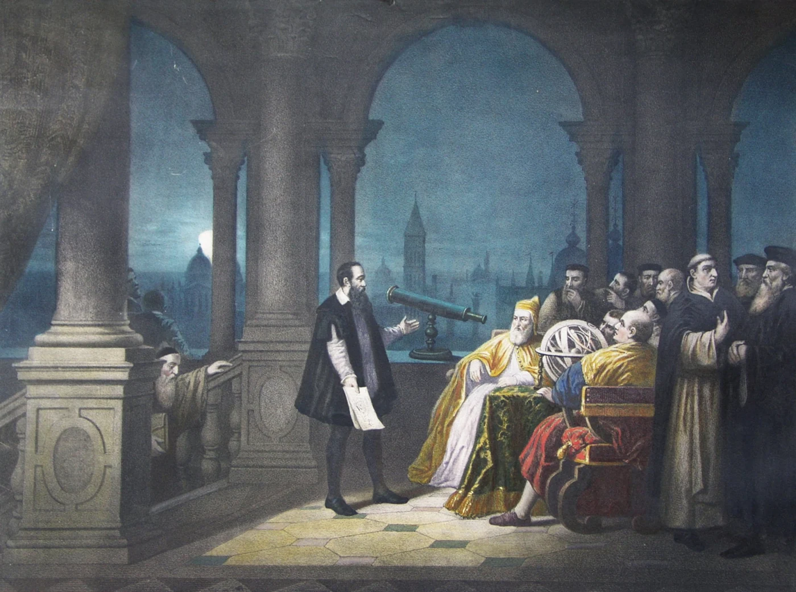

Interpretability
What inside a model causes a specific failure? We use tools from astrophysics to connect internal representations to behavior, then test those explanations by intervening in the model and measuring what changes.
Mission
What principles govern how machines learn, what they remember, and where their predictions fail?
The 1609 Institute is a research institute dedicated to fundamental AI. In astrophysics, the reality we want to understand is accessible only through noisy, incomplete observations. We bring the tools developed for that problem, including correlation analysis, simulation-based calibration, and systematic error budgets, to the study of learned systems.
Our goal is a predictive science of learning that guides the design of new AI architectures. We publish our research openly and develop promising results through models, applications, and spinouts.
Research program
We use statistics, statistical mechanics, and field theory to ask what a model has learned, how far ahead it can predict, and where its memory breaks down.
What inside a model causes a specific failure? We use tools from astrophysics to connect internal representations to behavior, then test those explanations by intervening in the model and measuring what changes.
We bring physical constraints and unequal-time correlations to joint-embedding predictive architectures (JEPAs). We test whether these methods preserve information over longer horizons and improve planning at a fixed compute budget.
We use the methods of effective field theory to separate scales, impose symmetries, and fit a small set of parameters. We test these descriptions on memory retrieval in modern Hopfield networks and forecasting in reservoir computers.

Venice, 1609
In August 1609, Galileo Galilei, then a professor at the University of Padova, demonstrated his improved telescope from the Campanile di San Marco and presented the instrument to Doge Leonardo Donato. When Galileo turned it to the sky, he could test ideas about the universe against observations.
The Institute takes its name from that year. We draw on Venice’s history as a meeting place for ideas and people, with planned bases in Venice and New York City.
Co-founder & Research Director
Alvise is a cosmologist and Associate Professor at the University of Padova. His research develops statistical methods for extracting information from large galaxy surveys, including wide-angle and unequal-time clustering and correlations between gravitational waves and large-scale structure. He previously held research appointments at CERN, Caltech and NASA JPL, Johns Hopkins, and the University of Barcelona.
Alvise’s websiteCo-founder & Development Director
Ash is an entrepreneur, investor, and author of The AI-First Company. He helped launch Zetta Venture Partners, an early venture fund focused on AI, and launched AngelList’s fundraising platform. He has invested in more than 100 companies, including Canva, Kaggle, Groq, and Bending Spoons. He now advises governments, corporations, and investment firms on AI strategy.
Ash’s websiteGet in touch about research collaborations.
Research inquiriesGet in touch to discuss investing in the Institute.
Email for inquiries